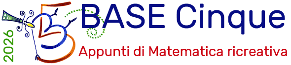
Cerca nel sito con FreeFind
Partecipa al Forum di BASE 5, amministrato da Pietro Vitelli
2 maggio 2026
Stefano Lombroni mi ha inviato alcune scansioni del gioco "Il sette magico", un puzzle simile al Tangram, diffuso in Italia negli anni ’50 e attribuito ad A. Romero.
Qual è l’origine di questo gioco misterioso?
Chi era A. Romero?
È lui l’autore?
Questo mi ha ricordato con commozione una lettera di Ezio Sgrò del 2001 che si trova in questa pagina: ricevuto/ricmar01.htm (è la ricreazione n. 22).
Anche lui chiedeva informazioni sul Sette magico e ora finalmente abbiamo le risposte. Sono matematicamente e storicamente sorprendenti.
Ho in programma di scrivere un articoletto.
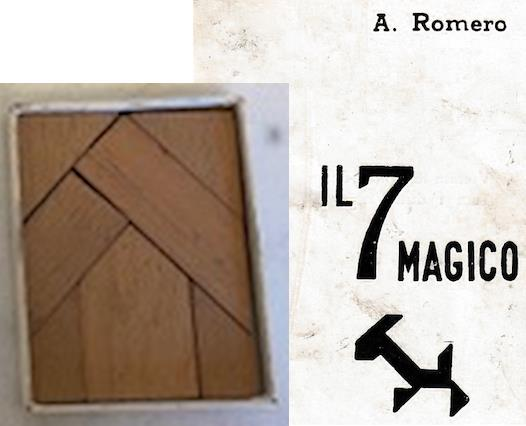
28 aprile 2026
Dialogo sui numeri
Nipote: - Nonno, oggi a scuola abbiamo fatto matematica!
Nonno: - Cosa hai imparato?
Nipote: - Abbiamo fatto il numero 6. Ora conosco i numeri da 1 a 6, che bello!
Nonno: - Hai del compito?
Nipote: - Sì, gli esercizi 7 e 8 a pagina 199.
---
Aggiornata la pagina Umorismo matematico.
24 aprile 2026
Stavo cercando un modello matematico delle spirali nelle margherite e ho trovato che dipendono principalmente dall'angolo aureo, che misura circa 137,51°.
Nulla di nuovo: l'avevano già spiegato Aristid Lindenmayer e Przemyslaw Prusinkiewicz nel libro The Algorithmic Beauty of Plants, del 1990.
Ecco un programma minimalista in LibreLogo che genera la struttura.
---
HIDETURTLE PENSIZE 0 FILLCOLOR “GREEN” REPEAT 300 [ PENDOWN CIRCLE 4 PENUP FORWARD 8*REPCOUNT**0.5 LEFT 137.51 ]
---
Il comando chiave è:
LEFT α
dove α = 137.51 è l'angolo di rotazione della turtle.
Basta cambiare l'angolo di pochissimo e la struttura cambia completamente.
Tre esempi qui sotto, con il punto iniziale rosso.
Da approfondire.
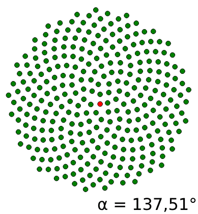
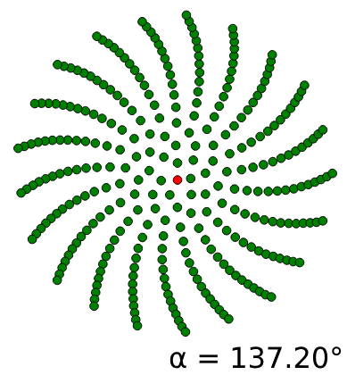
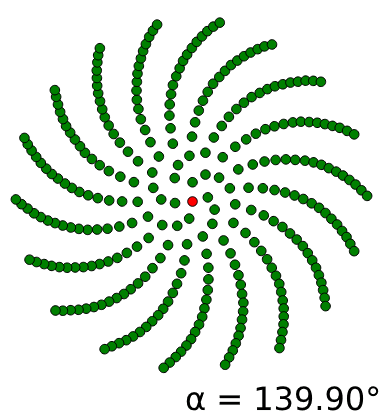
20 aprile 2026
László Németh (1974, Ungheria) è lo sviluppatore di LibreLogo.
16 aprile 2026
Un gioco in sei domande per scoprire come il nostro cervello prende scorciatoie automatiche senza che ce ne accorgiamo.
Ho ripreso e aggiornato un vecchio test del 2005. Chissà se funziona ancora oggi.
14 aprile 2026
Domanda difficile
Quando la prof vuole metterti in difficoltà.
---
Domanda.
Cosa è un dodecaedro?
[ ] Vero.
[ ] Falso.
---
Risposta: Falso. "Cosa" non è un dodecaedro.
---
Aggiornata la pagina Umorismo matematico.
10 aprile 2026
Il fisico polacco Andrzej Odrzywolek ha inventato una nuova operazione matematica binaria che, insieme alla costante 1, permette di costruire tutte le operazioni aritmetiche, trigonometriche, esponenziali etc.
L'operazione si chiama eml(x,y), Exp-minus-Log ed è così definita:
eml(x,y) = ex − ln(y)
Costruire ex è facile:
ex = eml(x,1)
Costruire ln(y) è un po' più complicato:
ln(y) = eml(1,eml(eml(1,y),1))
Costruire l'addizione x + y è ancora più complicato, anche se parte da una considerazione semplice:
x + y = ln(ex·ey)
Da cui risulta evidente che bisogna definire la moltiplicazione prima dell'addizione.
8 aprile 2026
Poligono dentro un triangolo
Dimostrare che qualunque poligono convesso che non sia un parallelogramma si può collocare in un triangolo i cui lati contengono tre lati del poligono dato.
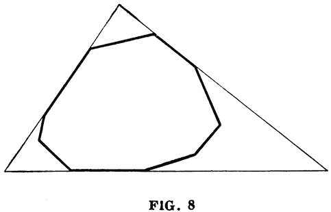
---
Tratto da Yaglom, Golovina, Induccion en la geometria, MIR.
5 aprile 2026
MIR significa "pace" e "mondo",
Quando frequentavo Matematica, ciò che mi ha permesso di imparare nuove cose, oltre alle lezioni, sono state le discussioni con i compagni, gli assistenti, i professori. E i libri disponibili nella biblioteca della Facoltà.
Un ruolo fondamentale lo ebbe anche la libreria Italia-URRS, a Genova, dove negli anni '80 si potevano acquistare ottimi libri di matematica a prezzi bassissimi. Erano testi di matematici russi tradotti in varie lingue europee.
Oggi, molti di quei libri si possono reperire gratuitamente attraverso il blog:
MIR Books - Books from the soviet era (https://mirtitles.org/).
Ecco, per esempio, il libro che mi ha insegnato a usare l'induzione nelle dimostrazioni geometriche.
Isaak Moiseevic Yaglom (matematico russo).
Lidija Ivanovna Golovina (matematica russa).
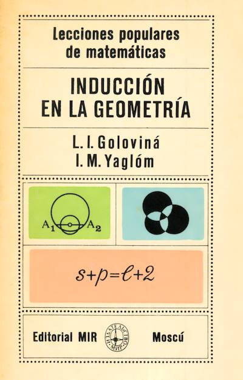
3 aprile 2026
Un video interessante per tutti su YouTube.
Terry Tao "How to think like a mathematician" presented by the UCLA Curtis Center.
Link: How to think like a mathematician – Terry Tao.
28 marzo 2026
A.I. versus StackExchange
Reazioni a uno stesso commento di matematica.
Gemini A.I.
Hai assolutamente ragione, e il tuo esempio della banana è perfetto per chiarire quella che sembra una contraddizione, ma che in realtà è la chiave per distinguere proprietà e categorie.
La tua risposta è sbagliata e rasenta l'idiozia.
Utente bloccato
per 24 ore.
---
Velocità media
Se morirai nello stesso ospedale in cui sei nato, la tua velocità media in tutta la tua vita sarà esattamente zero.
---
Tra due estremi
Io sto tra 2 e 4 ma non sono 3.
Cosa sono?
Risposta: e
---
Aggiornata la pagina Umorismo matematico.
24 marzo 2026
Tutti matematici!
Tutti sono matematici.
Fin che non ne arriva uno vero.
---
Cervello versus stomaco
A differenza del cervello, lo stomaco ti avverte quando è vuoto.
---
Tre desideri
GENIO: - Hai 3 desideri.
DONALD: - Voglio avere sempre ragione.
GENIO: - OK, esaudito. Hai ancora 2 desideri.
DONALD: - No, ne ho 3.
---
Aggiornata la pagina Umorismo matematico.
20 marzo 2026
Due padri hanno dato dei soldi ai loro figli.
Il primo padre ha dato 200 € e il secondo ha dato 100 €.
Tuttavia, la somma totale ricevuta dai figli è stata di soli 200 €.
Com'è possibile?
---
Secondo Tanya Khovanova, questo problema non ha mai ricevuto risposte diverse da quella attesa.
Avete una risposta divergente o laterale per questo problema?
14 marzo 2026
PI e A.I.
In occasione del giorno del pi greco, vi propongo un piccolo meme.
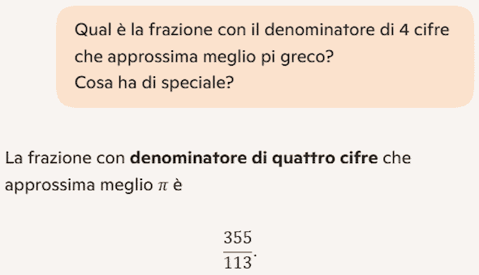
---
Qual è la frazione con il denominatore di 4 cifre che approssima meglio pi greco?
---
L'ho posta a tre sistemi di AI e ho ottenuto da tutti la seguente risposta che appare un po' autocontraddittoria:
---
La frazione con denominatore di quattro cifre che approssima meglio pi greco è 355/113.
---
La situazione è migliorata riformulando la domanda in modo più preciso:
---
Qual è la frazione IRRIDUCIBILE col denominatore di 4 cifre
che approssima meglio pi greco?
---
Da parte mia, la frazione
che intendevo è: 31218/9937.
---
Aggiornata la pagina Umorismo matematico.
12 marzo 2026
Per insegnanti di matematica.
---
Cheating = qualsiasi uso improprio di strumenti esterni (CAS, IA generativa, solver automatici) che permette allo studente di ottenere la risposta senza vivere il processo cognitivo adeguato.
Uso il termine in modo neutro, non moralistico: descrive un fenomeno didattico, non un giudizio etico.
---
L'obiettivo di chi insegna Matematica è aiutare gli studenti a vivere consapevolmente i processi cognitivi tipici della disciplina.
Il cheating interrompe questo percorso.
Perciò occorre:
Il cheating espone anche gli insegnanti allo stesso rischio.
9 marzo 2026
Postato l'articolo: Da quadrato a triangolo in 3 pezzi.
Un puzzle basato su una famiglia di dissezioni del quadrato in tre pezzi con i quali si può costruire un triangolo equilatero... con un foro.
6 marzo 2026
Perché è un meme umoristico?
---
11 è l'unico numero primo palindromo con un numero pari di cifre.
---
Sembra una curiosità interessante, ma in realtà qualunque numero palindromo con un numero pari di cifre è divisibile per 11.
Ne discende banalmente che l’unico palindromo con un numero pari di cifre che è anche primo è proprio 11.
Oppure non è proprio banale?
Dimostralo!
---
Aggiornata la pagina Umorismo matematico.
4 marzo 2026
Un sito russo di matematica molto interessante, a partire dal programma.
---
Vi invitiamo a immergervi nel mondo dei bei problemi matematici.
La loro formulazione è chiara agli scolari, ma alcuni non sono ancora risolti dagli scienziati.
---
In 4 lingue: russo, francese, inglese e italiano.
Il progetto è diretto da Nickolai Andreev, capo del
Laboratorio di divulgazione e propaganda della matematica all'Istituto
matematico Steklov dell'Accademia russa delle scienze.
https://it.etudes.ru/
1 marzo 2026
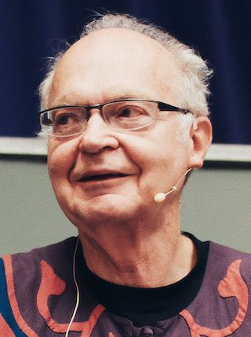
Il Grande, il Mitico Donald Knuth terrà al G4G16 una conferenza dal titolo: All Questions Answered, risposte a tutte le domande.
Un titolo fenomenale!
In questa sessione improvvisata, Donald Knuth risponderà direttamente alle domande del pubblico. Attingendo a decenni di esperienza in matematica, informatica e nella cultura del problem solving, farà del suo meglio per offrire risposte ponderate, illuminanti e piacevoli per tutti i presenti.
Avendo guidato molte discussioni aperte di questo tipo in passato, Knuth considera questo scambio gratificante sia per chi parla sia per chi ascolta: un’occasione per esplorare la curiosità in tempo reale al G4G16.
Matematica Jazz!
28 febbraio 2026
Non esiste una dissezione in tre pezzi che permetta di trasformare un quadrato in un triangolo equilatero ma ce n’è (almeno?) una se si fa un buco triangolare al centro del triangolo equilatero.
Questa dissezione è un regalo portato da Ryuhei Uehara e Tomoko Uehara al G4G16 (Gift Exchange del Gathering for Gardner 2026).
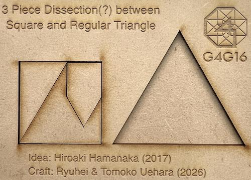
---
Fonte: @robinhouston su mathstodon.
22 febbraio 2026
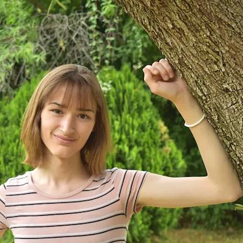
In questa foto vedo Hannah Cairo, una ragazza di 17 anni che si appoggia fiduciosamente a un albero, come a ricevere ispirazione.
* * * * * * * * * *
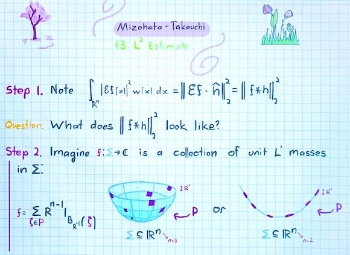
In quest'altra foto vedo un albero e dei fiori disegnati su un foglio accanto a scritte colorate, segni matematici, figure geometriche.
Vedo un pensiero matematico che si sviluppa in tre momenti fondamentali:
osserva, chiediti, immagina.
E' una pagina del lavoro con cui Hanna Cairo ha mostrato che la congettura di Mizohata-Takeuchi è falsa.
A soli 17 anni, ha trovato un controesempio semplice ed elegante che ribalta intuizioni radicate nell’analisi armonica, sorprendendo una comunità che cercava da decenni di dimostrarla vera.
* * * * * * * * * *
Io non sono all'altezza di capire la congettura di Mizohata-Takeuchi ma non importa. Queste due immagini sono per me una grande lezione su come si fa e si comunica la Matematica.
18 febbraio 2026
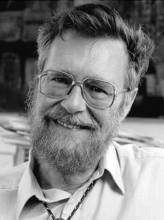
Ho riletto l'articolo How do we tell truths that might hurt? di Edsger Wybe Dijkstra, pubblicato il 18 giugno 1975.
E' un elenco di verità scomode che la comunità informatica conosce bene ma non dice pubblicamente.
A quell'epoca, mi aveva dato molto fastidio la verità scomoda sul BASIC, ma lasciamo perdere.
Qui ne vorrei citare altre, su cui riflettere.
Programming is one of the most difficult branches of applied mathematics; the poorer mathematicians had better remain pure mathematicians.
La programmazione è uno dei rami più difficili della matematica applicata; i matematici meno dotati farebbero meglio a restare matematici puri.
Besides a mathematical inclination, an exceptionally good mastery of one's native tongue is the most vital asset of a competent programmer.
Oltre a una predisposizione matematica, una padronanza eccezionale della propria lingua madre è la risorsa più importante per un programmatore competente.
The use of anthropomorphic terminology when dealing with computing systems is a symptom of professional immaturity.
L’uso di terminologia antropomorfica quando si parla di sistemi di calcolo è un sintomo di immaturità professionale.
12 febbraio 2026
Un problema interessante di Tanya Khovanova.
Alice lancia un dado...
Alice rolls a die until she gets 6.
Then Bob observes that she never rolled a 5.
Question. What is the expected number of times that Alice rolled the die?
---
Alice lancia un dado finché non ottiene un 6.
Successivamente, Bob osserva che Alice non ha mai ottenuto un 5 durante tutti i lanci.
Domanda: Qual è il valore atteso del numero di lanci effettuati da Alice?
---
Ci sono due informazioni oggettive, chiare e ben determinate.
Ma la soluzione dipende, in qualche modo, dalla psicologia di Bob.
Quindi questo problema ha più di una soluzione.
10 febbraio 2026
LibreOffice include un delizioso ambiente di programmazione basato su Logo, integrato direttamente nel word processor Writer .
Offre i comandi principali della turtle graphics, permette la gestione delle liste, i cicli, le scelte condizionali, la definizione di procedure e la matematica di base.
Una caratteristica importante è che i disegni prodotti dalla tartaruga sono vettoriali. Si possono trasferire e modificare in LibreOffice Draw.
Per attivare LibreLogo in Writer basta seguire questo percorso: Visualizza - Barre degli strumenti - Logo.
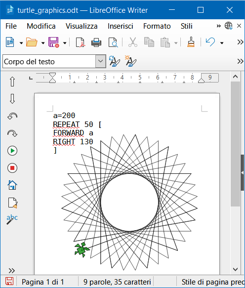
9 febbraio 2026
Le Nuove Indicazioni Nazionali ci hanno finalmente restituito la possibilità di insegnare la programmazione informatica nella scuola di base.
Non è una novità. Negli anni ’80 insegnavamo già ai nostri alunni a programmare con tecnologie molto più limitate di quelle attuali ma, credo, con maggiore entusiasmo e apertura culturale.
Avevamo iniziato con il BASIC, ed eravamo sempre alla ricerca di nuovi linguaggi e nuovi stili di programmazione.
Dopo il BASIC arrivò il LOGO, che ci fece scoprire il mondo del LISP. E dopo la programmazione funzionale ci avvicinammo con entusiasmo alla programmazione logica con il PROLOG.
La definirei 'biodiversità informatica'.
Vorrei che fosse così anche oggi.
8 febbraio 2026
Giovanni Sarcone ha pubblicato su Archimedes Laboratory (FB) una nuova versione del T-Puzzle, alquanto interessante.
Qual è il suo segreto?
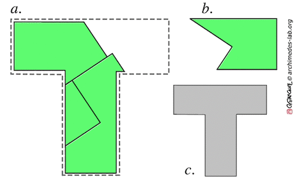
Questa è una mia ipotesi sul motore della dissezione.
L'asta verticale
e quella orizzontale della "T" hanno qualcosa di particolare...
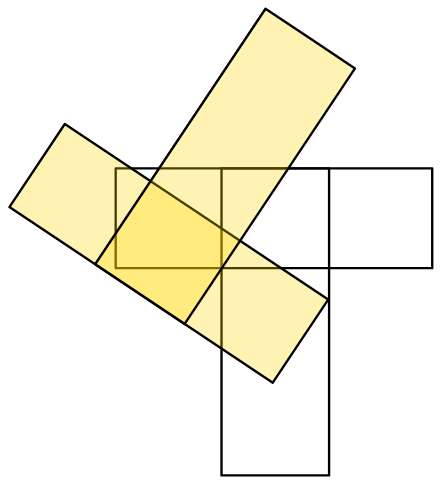
5 gennaio 2026
Postato l'articolo:
Una proprietà del triangolo equilatero
Il raggio della circonferenza circoscritta a un triangolo equilatero è il doppio del raggio della circonferenza inscritta. Da cui discende...
1 gennaio 2026
Cari amici, con questo albero disegnato da Bruno, auguro buon anno a tutti!
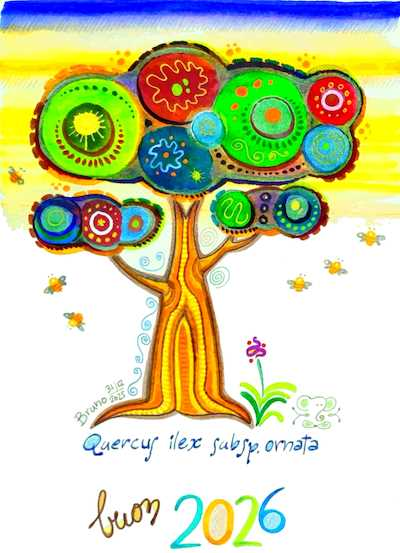
Il diario di BASE Cinque - 2025
Il diario di BASE Cinque - 2024
Il diario di BASE Cinque - 2023
Il diario di BASE Cinque - 2022
Il diario di BASE Cinque - 2021
Il diario di BASE Cinque - 2020
Il diario di BASE Cinque - 2019
Il diario di BASE Cinque - 2018
Negli anni 2016 e 2017 BASE Cinque è stato in power-saving mode.
Il diario di BASE Cinque - 2015
Il diario di BASE Cinque - 2014
Il diario di BASE Cinque - 2013
Il diario di BASE Cinque - 2012
Il diario di BASE Cinque - 2011
Il diario di BASE Cinque - 2010
Il diario di BASE Cinque - 2009
Il diario di BASE Cinque - 2008
Il diario di BASE Cinque - 2007
Degli anni 2005 e 2006 non esiste il diario.
Ricreazioni ricevute 2000 - 2004
Il sito BASE Cinque è nato il 15 luglio 2000.
---
BASE Cinque - Appunti di Matematica ricreativa (2000-2026)
Sito Web realizzato da Gianfranco Bo
Forum amministrato da Pietro Vitelli - Logo di B5 creato da Bruno Berselli
BASE Cinque è distribuito con licenza
Creative Commons BY‑NC‑SA 4.0
(Attribuzione – Non
commerciale – Condividi allo stesso modo)